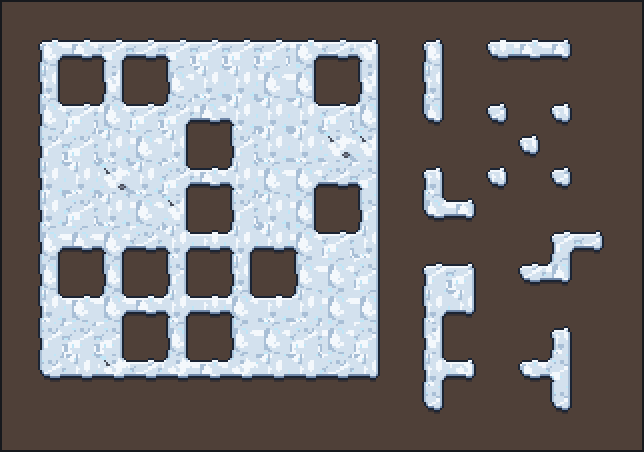
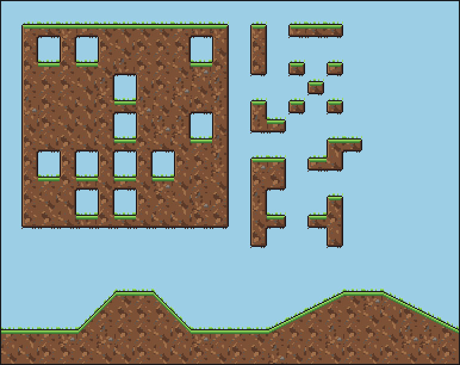

Free tile sets for Godot 4 and Tiled, drawn from a terrain description
To make a free autotile tile set for Godot 4 and Tiled, describe the terrain in a short JSON file (its fill, each edge's outline and highlight, a few variants) and run two Pixelbolt commands: they draw a 47-tile set, a test map of every tile, a Godot 4 TileSet with its terrain and a Tiled tileset for the Terrain Brush. On 8 November 2026, with Pixelbolt 0.13.0, Godot 4.7.2's terrain painter chose Pixelbolt's tile shape in all 1,915 cells it painted across six test maps for each of the four sets below, and Tiled 1.12.2 placed Pixelbolt's tile shape in every cell but lone ones (a cell with no terrain on any side has no terrain tile in Tiled, so you place it by hand). Each set took about 0.6 seconds to build (method and data).
We make Pixelbolt, a free, MIT-licensed pixel art toolkit for game makers and AI agents. No image model or online service draws these tiles: Pixelbolt's own code draws them from the description, offline, and the same description gives the same pixels every time with the same Pixelbolt version (our repeated builds were byte-identical).
Pixelbolt 0.13.0 · Godot 4.7.2 · Tiled 1.12.2 · Published 8 November 2026 · Last checked 8 November 2026 · On this page: Four free sets · Make your own · Godot 4 · Tiled · What the engines did · Other tools · When to use something else · How we tested

Four free sets to download
All four are 16 × 16 pixel tiles. Each zip holds the folder Pixelbolt's render command writes: the tile sheet (.png), the Godot 4 TileSet (.tileset.tres), the Tiled tileset (.tsx), a TexturePacker-style atlas (.atlas.json, with each tile's weight, and its collision where the set has it), one PNG per tile, the editable recipe, a preview page and a README; plus the description it was made from (.autotile.json) and the licence (MIT). The tiles are transparent outside the terrain: put a ground layer or a background colour under them. The background colours of the snow, meadow and ground test maps are only previews.
| Set | What it is | Tiles | Download |
|---|---|---|---|
| Snow (written for this guide) | Top-down snow with a dark outline, a lit top edge and a see-through shadow under the bottom edge. 47 shapes × 4 variants; one variant, with a rock and a twig, comes up a quarter as often as each plain one. | 188 | snow.zip (78 KB) · sheet · .tres · .tsx · description |
| Meadow (Pixelbolt's example) | Top-down grass with tufts on the top edge and a see-through shadow under the bottom edge. 47 shapes × 4 variants, one with flowers. | 188 | meadow.zip (79 KB) · sheet · .tres · .tsx · description |
| Ground (Pixelbolt's example) | Side-view platformer ground: a grass cap, a lit wall, roots underneath. 47 shapes × 3 variants plus 10 slope tiles (45° and gentle, with the tiles under their low ends). Every tile has a collision shape, set under the drawn grass rather than the tufts above it. | 151 | ground.zip (71 KB) · sheet · .tres · .tsx · description |
| Shore (Pixelbolt's example) | Water, sand and grass as three terrains in one set: 81 tiles for every mix of them at a tile's four corners, plus 9 variants of the plain tiles (two refills of each terrain, a lily pad, a shell and daisies). A transition shows only where two terrains meet in your map, so grass painted straight onto water gets no sand. The water is solid. | 90 | shore.zip (49 KB) · sheet · .tres · .tsx · description |




Make your own in two commands
- Write the description. Here is the whole snow set (snow.autotile.json):
{ "format": "pixelforge-autotile", "version": 1, "name": "snow", "tile": 16, "palette": { "k": "#1b2433", "b": "#6f87a8", "S": "#a9bfd6", "s": "#d3e1ee", "w": "#f4f8fc", "i": "#bfe6f7", "r": "#4a4f5c", "R": "#7b8090", "u": "#4f4038", "c": "#0e162659" }, "symbols": { "rock": [".rr.", "rRRr", ".rr."], "twig": ["r..", ".r.", ".rr"] }, "terrain": { "seed": 6, "fill": { "color": "s", "speckle": [ { "color": "w", "amount": 0.24, "size": 5 }, { "color": "S", "amount": 0.12, "size": 4 }, { "color": "i", "amount": 0.03, "size": 2 } ] }, "edges": { "all": { "depth": 2, "jitter": 1, "size": 6, "bands": ["k", "S"] }, "n": { "bands": ["k", "w"] }, "s": { "depth": 3, "bands": ["k", "b"], "outside": ["c"] } }, "round": 2, "inner": 1 }, "frame": "snow-{mask}-{variant}", "variants": [ { "name": "a", "weight": 4 }, { "name": "b", "weight": 4, "terrain": { "fill": { "seed": 11 } } }, { "name": "c", "weight": 4, "terrain": { "fill": { "seed": 23 } } }, { "name": "rocks", "weight": 1, "terrain": { "fill": { "seed": 37 } }, "ops": [ { "op": "stamp", "symbol": "rock", "x": 10, "y": 27 }, { "op": "stamp", "symbol": "twig", "x": 19, "y": 35 } ] } ], "preview": { "background": "u" }, "sheet": { "columns": 16 } }palettenames each colour with one character;chas an alpha byte (59), so the shadow is see-through.fillis the inside of the terrain: a base colour and seeded speckle layers, each covering itsamountof the tile in clumps aboutsizepixels across.edgesdescribes each side (n,e,s,w, orall):depthis the margin between the tile border and the terrain,jitterlets the edge wander,bandscolour it from the edge inward (an outline, then a highlight), andoutsidecolours the margin beyond that edge (here, the shadow under the bottom edge). Grass sets addtufts.roundandinnerround the outer and inner corners.variantsredraw the fill with anotherseedor stamp details on it, andweightsets how often each turns up.
"mode": "cardinal"(16 tiles, sides only),"mode": "corner"(16 tiles for a dual grid),layersfor transitions between two and four terrains,slopesandcollision. This guide tested the 47-tile mode and a three-terrain set only. - Run two commands with Node.js 20 or newer, in the folder holding the description:
npx -y pixelbolt@0.13.0 autotile snow.autotile.json --out snow.recipe.json --preview snow-test-map.png npx -y pixelbolt@0.13.0 render snow.recipe.json --out snowautotiledraws the set into an editable recipe and the test map intosnow-test-map.png.renderwrites a new foldersnow/withsnow.png,snow.tileset.tres,snow.tsx,snow.atlas.json, the editable recipesnow.pixel.json, one PNG per tile inframes/, a README and a preview page. Neither command overwrites its earlier output: after editing the description, add--forceto both. Both commands together took about 0.6 seconds for each of the four sets on our PC (a Ryzen 9 7950X3D, Node.js 24.19.0), once npx had the package. - Look at the test map for stray pixels and repetition. A terrain's own edges can't seam, so the compiler checks the joins that stamps and variants change and names pixels that break an outline with a
Seamwarning: there were none in the four sets.
Have your own drawing instead? Pixelbolt also builds a set from a small template you write as rows of characters, one per pixel (same notes; not tested for this guide). AI agents can do all of this through Pixelbolt's MCP server (pixel_compile, then pixel_render); see the README.
Use it in Godot 4
These steps use the TileMapLayer node, which needs Godot 4.3 or newer; we tested 4.7.2.
- Copy
snow.pngandsnow.tileset.tresinto one folder of your project. The TileSet finds the sheet by its file name, so keep the two together (move them in Godot's FileSystem dock, which updates the path). - Add a TileMapLayer node and set its Tile Set to
snow.tileset.tres. Set its Texture Filter to Nearest (or make Nearest the project's default texture filter) so the pixels stay sharp. - In the TileMap panel, open the Terrains tab, pick the terrain snow and paint. Godot picks each cell's tile from its neighbours, and between a shape's four variants at random, by each tile's probability (the rock variant has 0.25).
Or paint from code, as our test did:
var cells: Array[Vector2i] = [Vector2i(0, 0), Vector2i(1, 0), Vector2i(2, 0)]
$Ground.tile_set = preload("res://tiles/snow.tileset.tres")
$Ground.set_cells_terrain_connect(cells, 0, 0) # terrain set 0, terrain 0 (snow)- Collision. The ground set's TileSet has a physics layer with a polygon on every tile, set under the drawn grass rather than the tufts (we checked the polygons against the atlas; we didn't simulate a body). For the 45° slopes, give your
CharacterBody2Da Floor Max Angle a little above 45°, as Pixelbolt's notes advise. Godot's terrain painter doesn't place slopes: paint the terrain, then place each slope tile, and the tile under its low end, by hand, as the test map's hills show. - Transitions (shore). The shore's three terrains are one terrain set: water is terrain 0, sand 1 and grass 2. Paint bottom-up: water over the whole area, then sand over the sand cells and the grass cells, then grass over the grass cells, as our test did:
Godot puts each terrain on the points where four cells painted with it meet, so a terrain ends half a cell inside the cells you paint: 3 × 3 grass cells show 2 × 2 cells of grass, centred on them, and a single cell or a one-cell-wide strip shows none. Paint one row and one column more than the shape you want. Our check compared Godot with Pixelbolt's map of those points, which it matched in every cell; it is not the figure above, which Tiled paints as shown. Painting sand only on the sand cells would leave water between the sand and the grass. The three blob sets have no such offset: Godot paints them cell by cell.# all_cells, sand_and_grass_cells and grass_cells: each an Array[Vector2i], like cells above $Shore.set_cells_terrain_connect(all_cells, 0, 0) # water $Shore.set_cells_terrain_connect(sand_and_grass_cells, 0, 1) # sand $Shore.set_cells_terrain_connect(grass_cells, 0, 2) # grass
Pixelbolt's game integration notes cover several sets in one TileSet, padding and scale.
Use it in Tiled
- In a map of 16 × 16 tiles, Map → Add External Tileset and pick
snow.tsx(withsnow.pngbeside it). - In the Terrain Sets view, pick snow and paint with the Terrain Brush. Tiles with the same sides and corners (the same Wang id) are alternatives that Tiled picks between at random by their probability.
- A lone cell. Tiled paints the sides and corners between cells, so a single cell with its terrain on no side has no terrain tile: place its tile by hand (the first tile of the sheet,
snow-0-a, or its variants just after it). - Shore. The three terrains are one corner set with a colour each, painted on the points where four cells meet: each point of Tiled's map is a cell of Pixelbolt's, so paint each terrain where you want its cells, as in the shore figure. Every mix of the three has a tile, so the order doesn't matter.
- Slopes. The ground set's slopes are plain tiles with their collision objects, outside the terrain: paint the terrain, then place them by hand.
What the engines did with the four sets
| Set | Tiles | Godot 4.7.2: cells painted, all with Pixelbolt's tile shape | Tiled 1.12.2: tiles placed, all Pixelbolt's shape | Files on this page = files tested |
|---|---|---|---|---|
| Snow | 188 | 393 in 6 maps | 365 in 6 maps; 28 lone cells left empty | byte-identical |
| Meadow | 188 | 393 in 6 maps | 365 in 6 maps; 28 lone cells left empty | byte-identical |
| Ground | 151 | 393 in 6 maps | 365 in 6 maps; 28 lone cells left empty | byte-identical |
| Shore | 90 | 736 in 6 maps | 855 in 6 maps | byte-identical |
- The maps. For the three blob sets: each set's 20 × 14 test map (for ground, without the slope hills, which aren't terrain) and the five maps of Pixelbolt's engine checks: islands, single cells and one-cell strips, inner corners, a ring, cells that touch only at a corner, and a seeded scatter. For shore: its 22 × 21 test map and Pixelbolt's five layered maps; Tiled paints a corner map one cell wider and taller (the test map is 23 × 22 there), so its six shore maps hold 855 cells to Godot's 736 (an island ring, grass in water, a band of sand and grass, a checkerboard and a scatter). The blob maps have 393 terrain cells, 28 of them lone cells; the empty cells around them stayed empty in both engines.
- Godot. It loaded each TileSet with no error or warning; every tile had the right terrain, peering bits, probability, collision polygon and pixels, and
set_cells_terrain_connectput Pixelbolt's tile shape in every painted cell (for a variant, any of that shape's variants counts). For shore, Pixelbolt's tile is the one its map of the corner points draws, half a cell in from the painted cells (see Godot 4). - Tiled. Each
.tsxloaded with the right grid, probabilities, collision objects and a Wang set whose ids match the tiles. Each cell was then given all its sides' and corners' terrain colours from Pixelbolt's map through Tiled's scripting interface for terrain edits (TileLayerWangEdit, which picks tiles that match the requested colours), and every tile Tiled chose was one Pixelbolt's tilemap draws there. That checks the tileset's Wang ids and Tiled's tile lookup, not strokes painted by hand. A lone cell gets no tile in Tiled (above). Tiled'stmxrasterizerdrew every tile with its exported pixels, except that the half-transparent shadow pixels of snow and meadow (1,824 of them) came back at most one colour step off in each channel, most likely rounding as it blends a partly transparent pixel; Godot read the same pixels exactly. - Both engines ran without a window. Painting by hand in the editors was not tested.
Other ways to get a tile set into Godot or Tiled
Every row but Pixelbolt's is from the tool's own page, read on 8 November 2026, not run by us.
| Tool | You give it | It makes | Godot 4 and Tiled files | Price and terms |
|---|---|---|---|---|
| Pixelbolt (ours; its 47-tile and three-terrain sets tested above) | A terrain description in JSON, or a small template written as text | 47-tile, 16-tile and corner sets, transitions between two and four terrains, slopes | Godot 4 TileSet with terrain; Tiled .tsx with a Wang set | Free, MIT |
| SpriteCook | A text prompt, to a hosted AI model | A 15- or 17-piece set, and platformer and isometric sets; on paid plans the 17-piece base expands to 47 tiles | On paid plans: a Godot .tres with terrain (isometric sets: atlas only) and a Tiled .tsx (terrain with the 17-piece base) (its docs) | Free plan: 40 credits every 30 days, and a tile set costs 12 with the default model; engine exports from the $8-a-month plan, before VAT; commercial use of what you generate on every plan (pricing) |
| Blobsmith | Six base tiles you draw, or an RPG Maker A2 block | A 47-tile set, or a 16-tile sides-only set | Godot 4 .tres with terrain and Tiled .tsx in the paid version | $9.95 or more, with a commercial licence for your exports; a free browser Lite version that exports PNG only |
| TerrainForge | A finished tile sheet, in one of four layouts | No art: it sets each tile's terrain bits and collision | Godot 4 .tres with terrain and collision; Tiled .tsx with Wang sets | $5 or more; a free browser demo that exports up to 64 tiles; the page states no licence |
| Autotiler | A 13-tile template you draw, or an RPG Maker A2 block | A 47-tile set or a 16-tile dual grid | Godot 4 .tres with terrain and collision; Tiled .tsx with a Wang set | Free, MIT (desktop apps and a web version) |
| TilePipe | Tile parts you draw, and a ruleset | 47-tile (and 16 or 256) sets | A plain PNG or a Godot 3 tileset; no Godot 4 file; Tiled export planned | Free, MIT (last commit February 2023) |
A selection: tools that make or wire a whole set and write Godot or Tiled files. Our searches also turned up other AI tile generators, and tools that, by the search summaries, wire or assemble tiles you draw, among them Blobsmith Autotile Wirer and TileBitTools (on the Godot Asset Library), better-terrain, Pentatile and Blobator; we didn't open their pages. SpriteCook also has a free Tileset Base Generator for blank 15- and 17-piece templates.
When to use something else
- You have a finished tile sheet, such as a bought pack in a 47-tile or Wang layout: TerrainForge wires it into a Godot TileSet and a Tiled tileset.
- You'd rather draw the tiles: Autotiler (free, MIT) builds the 47-tile set from a 13-tile template or an RPG Maker A2 block, and Blobsmith from six base tiles. Pixelbolt's own template route takes your drawing as rows of text characters, which is slower than a paint program for detailed tiles.
- You want painted detail from a written prompt and don't mind a hosted AI service with credits: SpriteCook. Pixelbolt draws flat pixel-art fills, speckle, outlines, highlights and stamped details from the description; it doesn't paint textures from a sentence.
- Godot 3: Pixelbolt writes Godot 4 TileSets only. TilePipe exports Godot 3 tilesets, and Autotiler's page lists a Godot 3 export too.
- Isometric tiles: SpriteCook's page lists isometric sets. Pixelbolt's autotile sets are square tiles of an even size from 2 to 84 pixels (its notes).
- A jam that bans AI-made art: no image model is involved here, but rules differ on tools and on what you write with an AI assistant; check with the organisers.
How we tested
- Builds. Pixelbolt 0.13.0 from npm (its source byte-identical to the v0.13.0 tag) built the four sets with the two commands above, in a new folder through npx and again with a local install; both gave byte-identical files, and three timed runs of each set took 555 to 666 ms each, both commands included. make-sets.sh rebuilds them byte for byte.
- Engines. Godot 4.7.2 stable (the official Windows build, its SHA-512 checked against the release's sums), run headless; Tiled 1.12.2 (the Windows installer build), run with
--evaluateandtmxrasterizer. No window and no GPU. - The checks. Pixelbolt's repository has two independent engine checks,
scripts/verify-godot.mjsandscripts/verify-tiled.mjs; both passed at the v0.13.0 tag as they are (Godot output, Tiled output). check-page-sets.mjs then ran them on this guide's four sets and their test maps, and compared the CLI's files on this page, byte for byte, with a build of the same descriptions made in the same run as the files the engines loaded (results). For Tiled it uses a copy of the Tiled check that allows a partly transparent pixel to come back one colour step off intmxrasterizer's render, as the stock check already allows where partly transparent pixels blend in its scene step; opaque pixels and alpha must still match exactly. The copies published here were run from a v0.13.0 checkout'sscripts/folder and gave the same results. - Not tested: painting by hand in either editor; other Godot or Tiled versions; macOS and Linux; a game body walking on the collision shapes (the polygons were checked against the atlas); the 16-tile cardinal and single-terrain corner modes.
To repeat it: data/README.txt has the commands. The searches this page answers, and what ranked for them on 8 November 2026, are in searches-2026-11-08.txt.
Licence
Pixelbolt is free and open source under the MIT licence. The snow set and its description were made for this guide and are MIT-licensed, with the same licence text as Pixelbolt (LICENSE.txt in each zip). Meadow, ground and shore are examples that ship in Pixelbolt's MIT-licensed npm package. Godot is MIT-licensed; Tiled is free software under the GPL.
More from Pixelbolt
- Import a pixel art JSON sprite sheet into Unreal Engine 5 Paper2D, with flipbooks
- Fire: a campfire, a torch and a hand-drawn flame
- Water: a waterfall, a splash, a drip and a dam break
- Explosions: a fireball with smoke and sparks, and small particle bursts
All guides · The playground · The gallery · All comparisons · Pixelbolt home